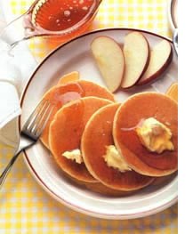
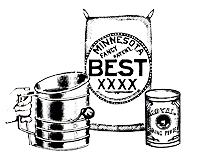
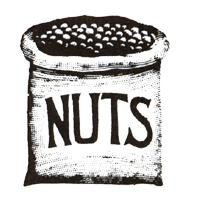
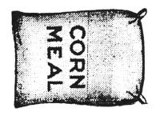

No one has ever gotten ego-involved with a flapjack.
"WHOEVER WANTS TO KNOW THE heart and mind of America had better learn baseball," wrote Jacques Barzun in 1954. Whoever wants to understand America's stomach might ponder the National League play-offs of 1989.
The October games pitted the San Francisco Giants against the Chicago Cubs and, inevitably, the San Francisco press (in the persons of columnists Lowell Cohn and Herb Caen) against Mike Royko, syndicated columnist for the Chicago Tribune. On the field, it remained a gentleman's game. In the newspapers, it turned nasty. It turned into a food fight.
Pained by the fact that the Cubbies are universally loved and the Giants are not, San Franciscan Lowell Cohn did the only sensible thing: He turned superior. "The big difference between San Francisco and Chicago," he wrote loftily, "is we're sophisticated and you're not. Sure, you're a city of big shoulders. But we're a city with a head attached that has a working brain."
Oh yeah? snorted Chicago's Mike Royko. "Stanford University, just outside your brainy town, has had 13 Nobel prize winners. The University of California at Berkeley has had 15. Very nice.
But the University of Chicago has had 57 Nobels. Put that in your skull and rattle it around, kid."
West Coast writer Herb Caen leapt into the fray. "Chicago," he chortled, is a "city of wide vistas and broad butts. It has size . . . but little of San Francisco's elegance and style."
Anatomical references, Royko retorted,were beneath reply. As for style, Chicago's architecture "makes Frisco look like a whistle-stop," and "our literary tradition . . . makes the Queen City look like a remedial English class."
Having disposed of such minor matters as o intelligence, breeding, and physiognomy, everybody went for the gut.
Chicago, Caen scoffed, "is resolutely o plain, with plain folks eating plain food on z the plains of America." Yes, Cohn chimed Q in, out here "we order dishes like fettucine Q Alfredo or veal piccata."Well, we don't, snarled Royko. Because o fettucine Alfredo is "an outdated culinary o cliche" that's still being served in two places: o San Francisco and "one restaurant in Rome r that caters to ugly American tourists." When Chicagoans want pasta, they lean toward "lobster-filled black pasta triangles." And o veal piccata? "I seldom order that, either, although I had some last week in North Carolina." [Editor's note: Now hold on there, Mike!]
Grown men do not do battle with or about pancakes. And nobody uses them as status symbols.
What do Chicagoans eat? Oh, "fresh foie gras with fresh truffle, radicchio, haricots verts, and walnut dressing; rabbit ballottine, stuffed with sweetbreads; or a maigret of mallard duck, with cranberry glaze and blackcurrant-vinegar sauce." Not every day, of course. "Sometimes a simple cassoulet hits the spot."
HERE IS WHERE WE ARE: WHEN A than is goaded beyond endurance, when his home and his home team are ruthlessly and savagely attacked, he lunges for the spice rack on the wall and takes down his trusty turmeric. Secure in his constitutional right to bear saucepans, supported by the powerful National Restaurant Association (NRA), he rattles his skillets at his tormentor and sneers, "Show me what you got."
A man's gotta do what a man's gotta do.
WHAT THIS COUNTRY NEEDS IS Agood pancake supper. The kind that's held in a warm church basement on a raw January night to raise money for the volunteer fire department. The kind everybody in town attends, passing butter, syrup, and gossip up and down the long rows of tables set end to end. Gray-haired, aproned women keep 30 flapjacks on the griddle at once, flipping them in orderly sequence, pausing to hand out paper plates bowed under huge stacks of hotcakes and to slip an extra flapjack onto the plates of small boys who smile just right. Everybody likes the food. Everybody gets along.
Grown men do not do battle with or about pancakes. And nobody, but nobody, uses them as status symbols.
What is it about these flat, unassuming cakes that engenders so much good humor around a table of two or 200? Perhaps they're evocative of easy childhood mornings, of weekend breakfasts when no school meant time taken in the kitchen, effort expended just for the pleasure of it.
Maybe it's their easygoing, accommodating nature. Substitute one kind of flour for another? Why not. Add more milk to a batter that's too thick to work with easily? Of course. No brown sugar in the pantry? White is fine.
Perhaps it's their simplicity, the fact that they're a quick fix, demanding no forethought, requiring only simple ingredients found in virtually every kitchen.
Then there's their genial ability to outlast their critics. As recently as 10 years ago, the health elite dismissed them as "empty carbohydrates," lovable but nutritionally bankrupt indulgences. What we should be eating, we were told, was protein-say, bacon and eggs. Ah, well. We're now urged.to reduce animal fat and protein and to base our diets on complex carbohydrates-for example, whole grains. The kind you find in wholegrain pancakes. (While we're on the subject, we've tested all our recipes with skim milk, and we've limited our own batters to one egg yolk. Try not to think about the odd cup of sour cream.)
Pancakes to the people, we say. Highbrow or low-, sophisticated or un-, elegant or in-, Americans love this sweet, rough meal. Which is probably why we never fight over it.
Each of the following recipes makes 14 to 16 four-inch pancakes.
2 cups whole wheat flour
2 tablespoons brown sugar
1 tablespoon baking powder
1/2 teaspoon salt
1 egg plus
1 white 2-1/4 cups milk
3 tablespoons oil or melted butter
In a large mixing bowl, combine flour, sugar, baking powder, and salt, and set aside. In a medium bowl, lightly beat egg and additional egg white, and whisk in milk. Make a well in the middle of the dry ingredients, and add milk mixture and oil. Quickly and gently stir the batter, just until dry ingredients are incorporated; don't beat. Lumps will disappear during cooking. Let the batter sit for a few minutes.
Heat an oiled or nonstick griddle or skillet until a few drops of water sprinkled on it dance, reduce heat to medium, and drop batter onto pan by quarter cupfuls (or however large you want your pancakes). Cook until air bubbles appear on the surface and the edges are dry. Flip, and cook until done.
Serve with maple syrup (it'll go farther if it's heated), honey, warm applesauce, fresh fruit and sweetened yogurt, or a fruit sauce made by simmering fresh fruit with sweetener and a little water.
Blueberry Pancakes: Stir in 1 cup of fresh or thawed frozen blueberries with the wet ingredients.
Cornmeal Pancakes: Substitute 1 cup of cornmeal for 1 cup of flour.
Peanut Butter Pancakes: Reduce milk to 2 cups. Stir 3 tablespoons of hot water into 3 tablespoons of smooth peanut butter, and add to milk mixture.
This thick batter makes a soft-textured pancake. After you drop a quarter cupful of batter onto the hot skillet, you may need to smooth the mixture out with the bottom of the cup. Cook on medium low, to give the hotcake time to cook through.
1 cup rolled oats
1-1/4 cups milk
3/4 cup whole wheat flour
1 tablespoon brown sugar
2 teaspoons baking powder 1/4 teaspoon salt
'!a teaspoon nutmeg 1 egg plus 1 white
1 tablespoon oil
1 small, sweet apple, such as Golden
Delicious, peeled, cored, and coarsely grated
In a medium bowl, combine the oats and milk, and set aside. (This mixture needs to sit for at least 5 minutes.) In a large bowl, mix flour, sugar, baking powder, salt, and nutmeg, and set aside. Lightly beat egg and extra white, and whisk into milk mixture. Make a well in the dry ingredients, and add milk mixture, oil, and apple. Quickly and gently stir the batter just until dry ingredients are incorporated; don't beat. Lumps will disappear during cooking. Let the batter sit for a few minutes.
Heat an oiled or nonstick griddle or skillet on high heat, then reduce to medium low. Drop batter onto pan by quarter cupfuls, and cook until air bubbles appear on the surface and the edges are dry. Flip, and cook.
Pancakes are a quick fix,requiring only simple ingredients and no forethought at all.
This marvelous recipe comes from Ken Haedrich's The Maple Syrup Cookbook (Garden Way Publishing, 1989).
1 cup unbleached or all-purpose flour
1 cup whole wheat flour
2-1/2teaspoons baking powder
1/2 teaspoon baking soda
1/2 teaspoon salt
1/2cup chopped walnuts or pecans
2 large eggs
1/4 cup maple syrup
4 tablespoons unsalted butter, melted
1-1/3 to 1-1/2 cups milk
3-1/4 cup sour cream
1 ripe banana, mashed
Combine the dry ingredients in a mixing bowl, and toss to mix. In a separate bowl, beat the eggs until frothy, then whisk in the remaining ingredients, using 1-1/3 cups milk the batter can be thinned, if needed, with the extra milk. Make a well in the dry mixture, then pour in the liquids. Stir, just to blend; do not beat. Let the batter sit for several minutes, then cook on a hot griddle.
1 cup whole wheat flour
1 cup unbleached white flour
1 tablespoon baking powder
1/2 teaspoon salt
2 tablespoons brown sugar
1 egg plus 1 white
1-2/3 cups milk
1-1/3 cup bourbon
4 tablespoons oil or melted butter
1/2 cup chopped pecans
In a large mixing bowl, combine flours, baking powder, salt, and brown sugar, and set aside. In a medium bowl, lightly beat egg and extra white, and whisk in milk and bourbon. Make a well in the middle of the dry ingredients, and add wet mixture, oil, and pecans. Quickly and gently stir the batter, just until the dry ingredients are incorporated; don't beat. Lumps will disappear during cooking. Let the batter sit for a few minutes.
Heat oiled or nonstick griddle or skillet until a few drops of water sprinkled on it dance, reduce heat to medium, and drop batter onto pan by quarter cupfuls. Cook until air bubbles appear on the surface and edges are dry, then flip and cook until done.
1 cup whole wheat flour
1 cup unbleached white flour
1 tablespoon baking powder
1/2 teaspoon salt
1-1/2 teaspoons ground ginger
1/2 teaspoon allspice
1/2 teaspoon cinnamon
1 egg plus
1 white 2 tablespoons molasses
2-1/4 cups milk
3 tablespoons oil or melted butter
In a large mixing bowl, combine dry ingredients. In a medium bowl, lightly beat egg and extra white, and whisk in molasses and milk. Make a well in the middle of the dry ingredients, and add milk mixture and oil. Quickly and gently stir the batter, just until the dry ingredients are incorporated; don't beat. Lumps will disappear during cooking. Let the batter sit for a few minutes.
Heat an oiled or nonstick griddle or skillet until a few drops of water sprinkled on it dance. Reduce heat to medium, and drop batter onto pan by quarter cupfuls. Cook until air bubbles appear on the surface and the edges are dry. Flip, and cook until done.
1 cup whole wheat flour
1 cup unbleached white flour
1 tablespoon baking powder
1/2 teaspoon salt
1/2 teaspoon cinnamon
1/2 teaspoon grated orange peel
1/4 teaspoon nutmeg
3 tablespoons sugar
1 egg plus 1 white AEAMERY BUTT
2 cups orange juice
1 teaspoon vanilla
3 tablespoons oil or melted butter
In a large mixing bowl, combine dry ingredients. In a medium bowl, lightly beat egg and extra white, then whisk in orange juice and vanilla. Make a well in the middle of the dry ingredients, and add the juice mixture and oil. Quickly and gently stir the batter, just until dry ingredients are incorporated; don't beat. Lumps will disappear during cooking. Let the batter sit for a few minutes.
Heat an oiled or nonstick griddle or skillet until a few drops of water sprinkled on it dance. Reduce heat to medium, and drop batter onto pan by quarter cupfuls. Cook until air bubbles appear on the surface and the edges are dry. Flip, and cook until done.
1 cup buckwheat flour
1 cup unbleached white flour
2 teaspoons baking powder
1 teaspoon baking soda
v 4 tablespoons sugar
1/2 teaspoon salt
1 egg plus
1 white
2-1/4 cups buttermilk
3 tablespoons oil or melted butter
In a large mixing bowl, combine flours, baking powder, baking soda, sugar, and salt, and set aside. In a medium bowl, lightly beat egg and extra white, whisk in buttermilk, and set aside. Make a well in the center of the dry ingredients, and add milk mixture and oil. Quickly and gently stir the batter, just until dry ingredients are incorporated. Don't beat; lumps will disappear during cooking. Let the batter sit for a few minutes.
Heat oiled or nonstick griddle or skillet until a few drops of water sprinkled on it dance, reduce heat to medium, and drop batter onto pan by quarter cupfuls. Cook until air bubbles appear on the surface and edges are dry. Flip, and cook until done.
Editor's note: We want Mike Royko to know that we still like him. We're not the least offended by his implication that, when it comes to food, North Carolina is a tad out of touch. In fact, next time he's in the neighborhood, we'll take him out for a patty fwas grass that'll knock his socks off.
|
 AL CLAYTON FOOD STYLING BY MARY ANN CLAYTON |
 |
 |
|
 |
|
|